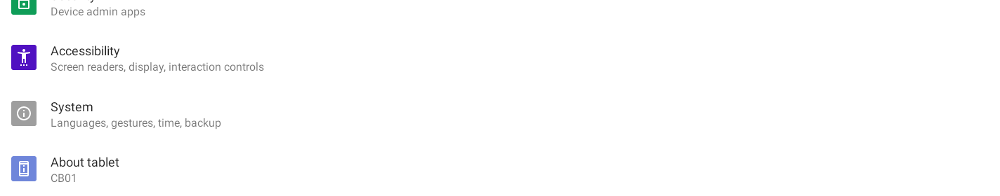
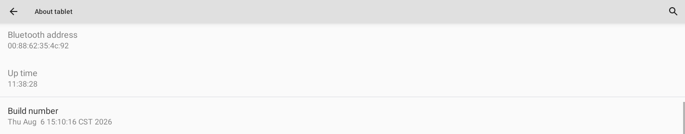
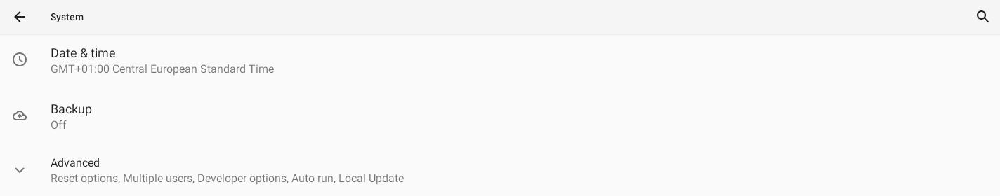
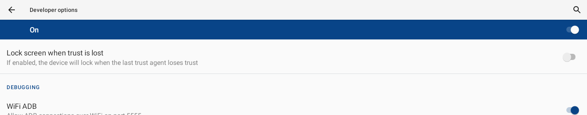

Deckhand is an independent, community macOS app for Sanytron UltraBar X hardware (CoreBar + QuantumLink modules: VivoCube, SenseCube, KnobKey, DotKey, PC-Boot card). Not affiliated with or endorsed by Sanytron. The vendor's product page, with photos of the bar and each module, is at https://www.sanytron.com/products/ultrabar-x-the-modular-desktop-command-center.
1. Install
- Open Deckhand.dmg and drag Deckhand onto the Applications folder.
- A notarized build (the DMG's "Read Me First" says so) opens like any other app. An ad-hoc-signed build — the first prerelease, or one you built yourself without a Developer ID — is blocked by macOS on the first launch. To open it the first time:
- In Applications, right-click (Control-click) Deckhand → Open → Open in the dialog.
- If that doesn't offer "Open": System Settings → Privacy & Security, scroll down, and click Open Anyway next to Deckhand.
- You only do this once.
- On first scan macOS asks for Local Network permission — click Allow (the app can't find the CoreBar otherwise). On first use of the Music controls (Widgets → Music) it asks for Automation permission to control Music — click OK. The Calendar widget asks for Calendar access the first time you enable it.
Deckhand runs on macOS 13 or later. On macOS 26 and later it uses the system's Liquid Glass styling; on older versions it looks like a standard macOS app.
What you need
- A Mac on macOS 13 or later.
- An UltraBar X with launcher 1.0.9 or later, on the same network as the Mac. Wi‑Fi or wired, it does not matter; the Mac and the bar only need to reach each other. The launcher version is the
verDeckhand shows in the sidebar after a scan (for example1.0.9(9)); on the bar it is under Settings → About tablet. Bars shipped in 2026 came with 1.0.3, and the bar's own Settings → About may not offer the update: Sanytron publishes the launcher (LineOS.V1.0.9.9.apk) and the bridge (bridge.1.0.4.4.apk) on its GitHub releases page; once the debug bridge below is on, Deckhand installs them for you from Settings → Bar software (the bar restarts its launcher; your pages and pairing survive). On 1.0.3 the SenseCube cards and the Deckhand apps' cards do not exist. - Only for the Deckhand apps on the bar (Monitor, Crypto, Flights and the other eight), for Restart bar launcher and for the Keep the screen on option: Android's debug bridge,
adb, on the Mac, and the bridge switched on at the bar. Install it withbrew install --cask android-platform-tools(needs Homebrew); switching it on at the bar is described under Turn on the debug bridge (ADB) on the bar. Everything else (cube cards, CoreBar pages, KnobKey, DotKey, SenseCube, marketplace apps and screensavers) works without it.
2. Connect the hardware
Power & the USB cable — read this first
The CoreBar has two USB ports. They are not interchangeable:
| Port | Use it for | Rule |
|---|---|---|
| USB-OTG | Power / charging — a fast charger (PD / QC, 9–20 V) or the 12 V adapter. | Fast charging is OK here. |
| PC-LINK | The vendor's link to a computer: the bar shows up as a USB keyboard plus a channel for Sanytron's own PC app. Deckhand does not use it. | 5 V only. A computer's USB port or a plain 5 V adapter. |
⚠️ Never plug a phone/MacBook/laptop PD fast-charger into PC-LINK. PC-LINK is 5 V-only; a 9–20 V charger will permanently damage the mainboard and can overheat. A computer's USB port is electrically safe on PC-LINK (it supplies 5 V only).
Deckhand needs no USB cable. It talks to the bar over your network, including the debug bridge. Leave PC-LINK unplugged: plugging it into a computer switches the bar into keyboard mode and turns the bar's WiFi ADB off (verified 2026-11-06). If that happened, switch WiFi ADB off and on in the bar's Developer options, then press Keep on after reboots in Settings → Debug bridge.
Network (how the app actually talks to the CoreBar)
Deckhand controls the CoreBar over Wi-Fi / your local network, not over the USB cable. Make sure:
- The CoreBar is connected to the same Wi-Fi / LAN as your Mac (check the CoreBar: Control Center → Wi-Fi).
- The USB cable can stay connected for power, but discovery and control run over the network.
The same guidance is shown in the app under Settings → Connecting.
3. Connect your CoreBar
The first time, Deckhand shows Connect your CoreBar:
- Find the bar — Deckhand looks on your network for about 8 seconds (a progress bar shows it). Your bar appears with a Pair button. macOS asks for Local Network access the first time; if you declined, use Local Network permission… to allow it. Can't see the bar (other subnet, VPN)? Connect by address… takes its IP address (shown on the bar under Settings → Network).
- Approve on the bar — press Pair; the bar shows an Approve button for 30 seconds (Deckhand shows the countdown). Tap it.
- Deckhand then finds the modules on its own and opens the CoreBar.
The pairing key is stored in a protected, user-only file in Application Support, and the bar's certificate is pinned, so an impostor on the network can't reuse your key. The paired bar is shown at the top of the sidebar (with more than one paired bar it is a menu to switch between them). Add another CoreBar…, Find modules and Forget this CoreBar… are under Settings → CoreBar.
4. Modules — wake them before looking
Tap the bar's screen and press a DotKey key before you press Find modules. Finding modules is a live scan of the magnetic bus, and a module that has gone to sleep — usually the DotKey — can be missed. Deckhand remembers every module it has ever seen on your bar and keeps it in the bar's configuration, so a one-time sleep won't drop a module; a scan with everything awake just gives the most reliable result.
Find modules is under Settings → CoreBar, under Maintenance on the CoreBar page, and in the sidebar when no modules are known yet. The scan takes about 16 seconds and also registers the modules on the bar so they can be controlled. A module that did not answer is marked asleep in the sidebar.
5. Using the app
One window, a sidebar on the left, grouped by what you want to change:
- Screens — CoreBar (the strip on the bar) and VivoCube (the small square screen module).
- Controls — KnobKey, DotKey: what the knob and keys do.
- Sensors — SenseCube.
- Library — Installed (everything in use, in one place), Widgets (the cards Deckhand can draw), Apps, Screensavers and People.
- Health — Status and Logs.
Every device page starts with a status strip: whether Deckhand is connected and answering the bar, what the device is showing right now (read back from the device, not assumed), when something was last sent, and — only when something is wrong — one sentence and one button that fixes it ("The cube is not on Wi-Fi — Set cube Wi-Fi…", "The cube's screen is off — Turn on", "The Deckhand page is gone from the bar — Publish page"). The toolbar, on every page, shows the last thing Deckhand did, the link to the bar ("Connected · 212 requests answered", or "Not connected", "Reconnecting…") and how long ago the bar last asked it something; the Activity button next to it opens the list of everything Deckhand did. The strip shows what the device is.
CoreBar
The bar's big screen shows a page: a row of the bar's own cards. About five fit (the Clock card takes the room of two); more scroll sideways. There is no full-screen picture — Deckhand's own picture (weather & date, free, refreshed hourly) is the Clock card's picture.
- Preview — drawn from your card list, one screenful at a time; ◀ ▶ step through the screenfuls the bar scrolls sideways through. It is not read back from the bar.
- Cards on the bar — drag to reorder, ✕ to remove, Add a card… below the list. ⌁ marks cards fed live by this Mac (CPU, memory, storage, network, the two buttons): they update only while Deckhand runs; the others keep running when the Mac is off.
- Weather (bar's own) is drawn by the bar from AccuWeather, which is not free (14-day trial, paid afterwards). Press Key… on that row to paste the key; it is sent to the bar with the next publish. Deckhand's own weather on the Clock card costs nothing.
- Publish page (⌘↩︎) — draws the clock picture, uploads the button icons, writes the pages and shows the Deckhand page; the steps are shown under the button. Deckhand asks for confirmation only when it matters: the first time, or when the bar has pages made in the official app (those would be removed — the bar cannot send pages back). The knob and keys get their bindings with every publish (see Controls).
- Start page — publishing marks the Deckhand page as the bar's start page, so the bar boots into it; Deckhand also selects it again every time it (re)connects to the bar. Use Show in Pages on the bar to switch to Standard Mode for a moment.
- Pages on the bar / Maintenance — the page list, Find modules, Re-read pages, Redraw preview. The official app's Deploy removes Deckhand's pictures; publish again afterwards.
VivoCube
Shows one card at a time.
- On the cube now — the card the cube reports it is on, with the picture Deckhand sent for it, "Card 2 of 4" and ◀ ▶ to step through them from the Mac (the DotKey and the bar's button do the same on the device). A dark picture with "Screen off" means the screen is off; an orange Wi-Fi note means the cube is not connected and may still show an old picture.
- Cards on the cube — an ordered list of up to 6 cards: drag to reorder, ✕ to remove, Add a card… to add (the Picture card asks for an image file). The order here is the order on the cube.
- Switching — Stay on one card, Switch automatically every 15 s / 30 s / 1 min / 3 min (a timer on this Mac; Deckhand must be open), or Only with the DotKey or the bar's button.
- Send to cube (⌘↩︎) — draws the cards, uploads them as one package, waits about 10 seconds for the cube to apply it and shows card 1. The steps appear under the button; a failure is one sentence with the next thing to do. The cards' contents are redrawn every few minutes while timed switching runs.
- Maintenance — Cube screen switch (off stays off until you turn it on), Fix black screen (screen on + card 1; use it when the cube shows black after a reboot), Send test picture, Restart cube… (the cube goes dark for about 20 seconds; asks first), Restart bar launcher… (over Wi-Fi ADB, for the upload-slot problem described under Troubleshooting; asks first), and Wi-Fi: which network the cube is on and whether it is connected. Fresh cubes sit on the bar's own hotspot, which the bar switches off when idle; uploads then cannot reach the cube. Set cube Wi-Fi… joins it to your own 2.4 GHz network (a combined 2.4/5 GHz name may not work; the bar must be on the same network); the password goes to the cube only.
SenseCube
Live temperature, humidity and light, read every 5 seconds while the page is open. Add all five puts the Temperature, Humidity, Light, Presence and Sound level cards on the CoreBar page (the bar draws them itself). Presence (radar) and sound level are push-only: the bar can show them, Deckhand cannot read them. Vibration is only an event on the bar.
KnobKey and DotKey
What each control does, as it is bound today: knob turn → Mac volume (the speakers chosen in System Settings → Sound; the KnobKey page shows which), press → play / pause in Apple Music; DotKey key 1 → previous cube card, key 2 → next cube card, hold key 3 → Standard page. These bindings are part of the CoreBar page and are active while that page is on the bar; publish it once to activate them. Changing them is planned.
Installed
Sidebar → Library → Installed: what is on the bar and on the screens right now, in one place, with Refresh and Update all (n) in the header (the count is how many things have a newer version; the updates run one after another). Four panels: Apps on the bar (Deckhand's own apps with Update and Remove, which go over ADB; marketplace apps with Web UI, Update and Remove; firmware apps can only be updated), Screensavers on the bar (the one in use cannot be removed — pick another first), Cards on the VivoCube (Remove takes the card out of the cube's list) and Cards on the CoreBar page (Remove, and a line saying whether the page is published to the bar yet). Every Remove asks first. To add things, go to the page of that kind: Widgets, Apps or Screensavers.
Widgets
A list on the left, the chosen card on the right with a switch and its settings. Two sections in the list: For the VivoCube (pictures Deckhand draws — only cards that stay valid for 5 minutes, because the cube gets a new picture every 5 minutes at most; live readings and clocks are deliberately not offered there, and the list marks these snapshot) and For the CoreBar (cards the bar draws itself and updates live). The cube cards, with a preview and settings: Weather, Music (album art), Claude Code monitor, Crypto, Calendar, Date and Picture (your own image); the switch On the cube puts the card in the cube's list or takes it out, and a line under it says whether the cube has it yet. A bar card has no preview (the bar renders it at its own size); its switch is On the CoreBar page, with Open CoreBar page next to it to publish. The apps' own cards (Sonos, UltraNotes, UltraBar Radio, the Deckhand apps …) are no longer listed here: each app carries its card on the Apps page.
- Weather — location (Same as this Mac or Manual, shared with Flights and Sun & Moon), units and the 24-hour clock switch (used by the clock picture and the Calendar page); current conditions only, no clock. See section 6.
- Music — play/pause, previous, next and volume for Apple Music.
Two very different screens
- VivoCube (240×240). Deckhand draws every pixel: each card is a picture rendered on the Mac and sent as a package (up to 6 cards). The cube only shows what was last sent. Cards are redrawn and re-sent every 5 minutes at most (longer when the switch interval × number of cards exceeds that), so "live" numbers such as CPU, network or token counts are snapshots, not a live meter. Cards that change slowly (weather, calendar, crypto day chart, date) suit the cube; a per-second gauge does not.
- CoreBar (1424×280). The bar draws its own fixed-size cards (clock, weather, world time, timer, CPU, memory, network, SenseCube, PC buttons, scenes) and updates them live from the data the bar pulls over the link (CPU every 3 s, network every 5 s). Deckhand cannot place its own pictures on the bar; the only picture it can inject is the cover of the clock card (a rounded square, with a blurred copy as the card background), which is where the "Clock picture" comes from. A cube card cannot be shown on the bar one-to-one, nor a bar card on the cube. Filling the whole bar screen is only possible through the bar's screensaver app, which Deckhand does not control.
Apps
A list on the left, the chosen app on the right. Three sections in the list: Deckhand apps (the eleven full-width apps Deckhand ships — a twelfth, Deckhand Home, is a home screen rather than a page and lives under Settings → Bar home screen: Monitor, Claude, Crypto, Weather, Music, Calendar, Flights, Sun & Moon, Headlines, Verse, Tasks, each a live full-width page with one card on the bar), Marketplace (the vendor's catalogue; the bar downloads and installs these itself) and Built into the firmware (system apps). Each row shows the version on the bar and an orange tag when a newer one exists. On the right: the switch On the bar (on installs — over ADB for a Deckhand app, by the bar itself for a marketplace one; off asks first, then removes the app and its icon) and Update to x.y when there is a newer version. Firmware apps cannot be removed; instead they have Turned on, Android's own switch (over the debug bridge): off hides the app and stops it from running, and it stays in the list as turned off so you can turn it on again. The launcher, the module hub, the keyboard and Android's own packages are never offered. Under it, once the app is installed: Icon on the Deckhand page, whether the app's icon is on Deckhand's page of cards in the bar's launcher (tap it there to open the app; without it the app is still in the bar's app list). Installing a Deckhand app switches it on; Open CoreBar page next to it is where you publish. A Deckhand app also has its own settings: Flights (radius 1–25 km around the weather location; the bar fetches the positions itself, every 10 s while the page is on screen; plus the Weather location), Headlines (Source: CNN, BBC World, New York Times, The Guardian, NOS or NU.nl; the bar fetches them itself every 10 minutes), Tasks (your Linear personal API key, kept in a user-only file on this Mac), Sun & Moon (computed on the bar for the Weather location, nothing fetched); Weather, Crypto, Calendar, Claude and Music share the settings of the cube widget of the same name; Verse and Monitor have none. A marketplace app shows Web UI when it has one and What's new with the changelog. Install failures (ADB off after a reboot, no APK, no bar) show as a banner on the page with the fix. Refresh (⌘R) and Update all (n) are in the header here as well as on the Installed page; while something installs the header says "Installing …".
Turn on the debug bridge (ADB) on the bar
The Deckhand apps are installed over Android's debug bridge, so the bar has to accept ADB from the Mac. You do this once; Settings → Debug bridge (ADB) in Deckhand shows the same three steps with a tick next to each one that is done.
On the Mac: install Android's platform tools, in Terminal:
brew install --cask android-platform-tools(needs Homebrew). Deckhand's first step ticks.On the bar, open its Settings: long‑press the Settings button on the bar's home screen. Scroll to the bottom of the list.

Become a developer: tap About tablet, scroll to the bottom and tap Build number seven times, until the bar says you are now a developer. Go back one screen.

Find Developer options: tap System, then Advanced (it lists Developer options), then Developer options.

Switch on WiFi ADB: scroll down to Debugging and switch WiFi ADB on ("Allow ADB connections over WiFi on port 5555"). Leave the Settings with the bar's Home button.

Back in Deckhand, Settings → Debug bridge: press Check. The bar may now show Allow debugging?: tick Always allow from this computer and tap Allow, then press Check again. The second step ticks.
Press Keep on after reboots. Without it, the WiFi ADB switch only lasts until the bar's next reboot; this makes it come back by itself (Deckhand sets
persist.adb.tcp.port=5555and switches the bar's USB debugging on, which Android needs to start the debug bridge at boot). The third step ticks, and from now on the Apps page installs and updates the Deckhand apps over Wi‑Fi.
No cable is needed, and PC‑LINK does not help here: in its keyboard mode the bar offers no debug bridge over USB, and plugging it in turns WiFi ADB off. If the bar stops answering after a reboot, switch WiFi ADB on again at the bar (step 5) and press Keep on after reboots.
While WiFi ADB is on, every device on your network can open a shell on the bar, so keep the bar on a network you trust (see the Security section on the site).
Screensavers
Sidebar → Library → Screensavers: a list on the left (installed ones first with an in use caption, then the vendor's catalogue: Whale, Spectrum Stream, Black Hole, a flip clock …) and the chosen one on the right with its thumbnail, the switch Installed on the bar (on installs — about ten seconds, the bar fetches it itself; off asks first, then removes; the one in use cannot be removed until another is chosen, and firmware ones not at all), the button Use this screensaver and Update to x.y when the catalogue has a newer one. Below that the panel Screensaver settings: Start screensaver on or off and the idle time after which it starts (30 s … 5 min, never). That is one setting for whichever screensaver is in use, not per screensaver. Refresh and Update all are in the header here too.
People
Save contacts; each gets one-click Teams chat / call, FaceTime, Mail. Stored locally on your Mac.
Status
Asks the bar and its modules what they are doing (and again every 30 seconds while open): connection, pages on the bar, the cube's Wi-Fi, screen and current card, the last upload result, SenseCube readings, the KnobKey link, modules seen before but missing now, and whether weather resolves. Problems come first, each with its one button. Copy report puts everything — plus your card lists and the last log lines — on the clipboard as text: paste that instead of taking a photo of the device.
Logs
Every message between this Mac and the bar, with the pairing key, the apps' session tokens, the cube Wi-Fi password and the weather key redacted; the file is readable only by you and capped at 5 MB. Reveal in Finder shows the file, Copy puts the lines on the clipboard, Clear… empties the file (asks first).
Settings (sidebar → Deckhand → Settings)
Name, serial and address of the bar; the connection and USB-port guidance; what can only be set on the bar itself (time & time zone, Wi-Fi, Bluetooth). Optional extras live here too:
- Debug bridge (ADB) — three steps with a tick next to each one that is done:
adbon the Mac, WiFi ADB on at the bar (the exact menu path is shown while it is not, and a separate note while the bar is still asking whether to allow this Mac), and stays on after a reboot. The Deckhand apps' installs, Restart bar launcher, Keep the screen on and Bar software all use it. Check refreshes; Keep on after reboots setspersist.adb.tcp.port=5555and switches the bar's USB debugging on (both are needed, verified 2026-11-06); Turn on over USB runsadb tcpip 5555on a bar thatadbsees over USB. The bar's PC‑LINK port does not offer that (it is a keyboard there), so in practice the button stays greyed out. The full walk-through with pictures is under Turn on the debug bridge (ADB) on the bar above. - Bar hardening — one switch, Only this Mac may connect to the bar, off by default. It puts a firewall on the bar: on your home network only this Mac may open connections to it, which closes the root shell the debug bridge otherwise offers to every device on the network, and the bar's unauthenticated upload server. The VivoCube's own Wi‑Fi link, the bar apps' internet access and Deckhand's beacon keep working. The status line says whether it is on and for which address. The bar forgets the rules when it restarts; Deckhand sets them again once the bar has finished starting and checks every two minutes. Other devices, such as the vendor's own apps, cannot reach the bar while it is on. If this Mac gets a different address and loses the bar, restart the bar: the rules are gone and Deckhand sets them again with the new address. After a bar restart Deckhand also wakes the VivoCube's screen, which a restart can leave dark.
- Bar software — the bar's launcher (
com.ultrabar.launch) and bridge service (com.ultrabar.hub), as installed on the bar and as published by Sanytron on its GitHub releases page. Check reads both (the bar's versions need the debug bridge). When the release is newer, Update bar software downloads the APK from GitHub, reads the package name and version out of it (anything that is not the launcher or the bridge, or not newer, is refused), installs the bridge and then the launcher over Wi‑Fi ADB, and reads the versions again. The launcher restarts when it is replaced: the bar's screen goes blank for a few seconds and Deckhand reconnects; your pages and the pairing stay. Nobody needs the vendor's desktop app for this any more. - Bar home screen — what the bar shows when no app is open. Out of the box that is the bar's own launcher with its card pages. Deckhand Home is a plain home screen for the strip: the clock and date on the left, a green dot while Deckhand's beacon is heard, one tile per installed app in the middle (Deckhand's own apps first, then the rest; tap opens, a long press opens the app's info page), and Settings and UltraBar (the bar's own launcher) on the right. Check reads whether Deckhand Home is on the bar and which home screen the bar uses; Install Deckhand Home puts the APK shipped with Deckhand on the bar over ADB; Use Deckhand Home makes it the home screen (
cmd package set-home-activity), Use the bar's own home switches back. Both launchers keep running either way — the bar's own one still handles the cube uploads and the module bus — so the switch is reversible in one press. With Deckhand Home in front the bar's Back key returns to it from any app, and the bar's card pages are one tap away on the UltraBar tile. - Bar screen — Keep the screen on while someone is at the desk (via ADB). The bar's protocol cannot wake its screen or change its timeout, so this goes through Android's debug bridge: turn the debug bridge on as described under Turn on the debug bridge (ADB) on the bar above. Deckhand then follows the SenseCube's presence events: while someone is there the screen stays on (a dark screen is woken), after the chosen number of minutes without anyone it goes off. Switching the option off restores the plain timeout. The status line says what Deckhand sees.
- Deckhand apps (on the Apps page, not here) — eleven small apps for the bar, each its own card and each a full-width, live page: Monitor (this Mac: CPU history, memory, network, disk), Claude (which terminal needs you: every Claude Code session with a message from you or Claude in the last hour, the waiting ones pulsing orange, under the name of its cmux workspace when you use cmux, else the name you gave it with
/rename, else its folder, with Claude's title for it and what it last said), Crypto (your coins with today's chart), Weather (now plus three days), Music (album art, title, play/pause/next/previous), Calendar (today and two more days), Flights (a radar on the left on an OpenStreetMap road map, scaled so the circle is exactly the radius you chose, and up to four flights beside it, each panel in its own colour — green, amber, blue, pink — with its plane and flight number on the radar in the same colour; other aircraft in the circle are small grey planes, and when the circle is empty the nearest aircraft within 25 km is shown; the map is OpenStreetMap, fetched, toned down and cached by the app on the bar; radius under Apps → Flights), Sun & Moon (today's sun arc with rise, set, noon, golden hour and twilight, and the moon in its phase), Headlines (CNN by default; the source is under Apps → Headlines), Verse (a Bible verse for the day, World English Bible) and Tasks (your open Linear issues, refreshed every 20 s while the page is open on the bar and every 2 min otherwise; tap one on the bar and press Done to close it in Linear, which Deckhand does with your key; paste a personal API key under Apps → Tasks — it is kept in a user-only file on the Mac). Install each from the Apps page with the switch Installed on the bar (over ADB, see Debug bridge above); then switch on Card on the CoreBar page and publish. The apps find Deckhand by themselves through a UDP beacon. ✕ or a long press on the bar returns to the cards. - Leaving a Deckhand app on the bar — tap the ✕ in the page's top-right corner (the whole corner, 96 px square, is the button), press the bar's own Back key at the right of the screen, or hold a finger anywhere on the page for a second. All three return to the bar's page.
- How the apps talk to the Mac (details) — every app carries its own page, so nothing is loaded from the Mac. While Deckhand runs it answers the data requests of Monitor, Claude, Music, Calendar and Tasks on
http://<mac>:7432(plain HTTP on your LAN, JSON and the album art only) and serves the on-bar apps' settings as/config.json. It answers only the selected bar and the Mac itself; anything else on the network gets 403. The data is read-only except for the three buttons that do something — play/pause, next and previous in Music, and Done in Tasks — which the app sends as a request with a marker header that a web page from elsewhere cannot forge. The apps find Deckhand through a UDP beacon it sends every 5 seconds, and only accept one from a private LAN address. Close Deckhand and these five apps show "Waiting for the Mac…" until it is back. - Apps that run on the bar itself (bar apps 2.0) — every app now carries its own page, so it appears at once, with or without the Mac. Flights, Crypto, Weather, Sun & Moon, Headlines and Verse no longer need the Mac: the page is inside the app, the bar fetches the flights, prices, forecast, news and verse itself, works out the sun and moon itself, and keeps the map tiles. Deckhand only tells them what to show: your location, units, the flight radius, which coins in which currency, which news source. It keeps that as one settings document with a section per app and pushes it to the bar over the debug bridge as soon as you change something (and serves it to the apps as
/config.json, so they also pick it up without the debug bridge). The apps keep the last settings they got, so with the Mac off they carry on as before; on a bar that has never seen Deckhand they use its internet address for the location. Monitor, Claude, Music, Calendar and Tasks show things only the Mac has, so they ask Deckhand for that data and say "Waiting for the Mac…" while it is away.
About
About Deckhand (sidebar → Deckhand) shows the version, repository link and license (MIT).
6. Weather
The weather widget uses Open-Meteo (free, no API key). Set your location in Widgets → Weather:
- Same as this Mac uses macOS Location (macOS will ask for permission). If Location access isn't granted, the app falls back to the manual city if you entered one, and otherwise to approximate IP geolocation (ipwho.is) so the widget still works.
- Manual takes a city name, or latitude/longitude for an exact spot.
This is independent of the CoreBar's own built-in AccuWeather widget, which needs its own API key set on the device.
7. Troubleshooting
Firmware matters. The bar's launcher version is the
verin the sidebar/discovery (for example1.0.9(9)). Cards added in later releases do not exist on older launchers: on 1.0.3 the five SenseCube cards never appear, on 1.0.9 they do. Settings → About on the bar may show no update even when one exists; the release APKs are on the vendor's GitHub release page and can be installed over ADB (see the vendor's support pages at https://hub.sanytron.com/support/ultrabarx and PROTOCOL.md).A hiss or click from the bar when you tap Next card or Play / pause is the launcher's own tap sound (new in 1.0.9, played at 30 % of the bar's media volume). It ignores the bar's "Click sound" switch; lower the bar's media volume under Settings → Sound on the bar if it bothers you.
SenseCube temperature reads several degrees too high (and humidity too low): the cube warms up on the bar. SenseCube firmware V2 adds a calibration; the OTA file is in the vendor release.
"No CoreBars found" — CoreBar and Mac must be on the same Wi-Fi; grant Local Network permission (System Settings → Privacy & Security → Local Network → Deckhand); press Look again. If broadcast is blocked, use Connect by address….
App won't open (unidentified developer) — right-click → Open (see Install), once.
A module is missing after a scan — tap the CoreBar screen to wake everything, make sure the module is attached and powered, then press Find modules (see section 4).
"Module not accepted" on an image push — the app auto-provisions and retries; if it still fails, re-scan modules first.
VivoCube upload is refused ("error 4") — the cube itself says it is not on Wi-Fi, usually because it is stuck at "still connecting" (the strip and Maintenance → Wi-Fi show this). Deckhand now re-sends the cube's own Wi-Fi settings before every upload when it sees that state, which completes the join; you can also press Set cube Wi-Fi… and send the same network again. Wait until the status reads "connected", then send the cards again.
VivoCube upload says "busy" or "hotspot has no IP" — the bar's hotspot is down, so it has no path to the cube. Wake the bar (press a key) or check its hotspot, then try again; wait at least 10 seconds between uploads.
The bar's screen goes black after a few minutes — that is the bar's own screen timeout (bar: Settings → Screen timeout, 30 s to 5 min or Never), not Deckhand; the screensaver (Screensavers page) runs separately after its own idle time. Over the bar's own protocol nothing can wake a screen that is already off: a page switch does not count as activity on the bar (checked 2026-11-04). For a time between 5 min and Never, set it over ADB:
adb shell settings put system screen_off_timeout 600000(10 min). The bar itself does not use the SenseCube's presence sensor for this, but Deckhand can, through ADB: Settings → Bar screen → Keep the screen on while someone is at the desk.The cube stops taking new cards after a day or so ("the bar's launcher has used up its upload slots") — a leak in the bar's firmware: after about 100 uploads since the bar started, every further one fails. With Wi-Fi ADB on, Deckhand restarts the bar's launcher by itself and sends again (the bar's screen reloads for a few seconds); without it, use Restart bar launcher under VivoCube → Maintenance once ADB is on, or restart the bar.
KnobKey / DotKey do something else than the Controls pages say — the bindings travel with the CoreBar page; after updating Deckhand press Publish bindings (Controls pages) or Publish page (CoreBar) once.
VivoCube stays black — open the VivoCube page: the status strip names the cause (screen off, not on Wi-Fi, or pointing at a card that no longer exists) with a button that fixes it; Maintenance → Fix black screen does the same by hand (then re-publish if needed). Avoid Screen Off while a rotation runs. If it is still black, press Restart cube under Maintenance on the VivoCube page and publish again.
Pushed image looks off — re-publish the widget; if a custom image still looks wrong, try a square source image (Deckhand renders 240 × 240; transparency is flattened).
The Deckhand page shows no picture on the clock card — press Update picture on the Clock card (re-uploads
deckhand/cover.png); if the official app deployed in between, its Deploy deleted Deckhand's images — publish the page again. There is no error message because the CoreBar does not acknowledge previews.My CoreBar images / pages disappeared — most likely the official UltraWorkSpace app deployed in between; it erases other apps' files. Re-publish from Deckhand.
CoreBar clock wrong — set time/timezone on the CoreBar itself (it uses NTP); the Mac app can't push time.
Weather shows the wrong place — allow Location access, or set a manual city in Widgets → Weather.
8. What's next (roadmap)
A few things in the works, in no particular order: choosing your own KnobKey and DotKey bindings (today they are fixed), a Meetings bar app (next meeting, countdown and Join from Apple Calendar), module firmware updates from Deckhand, and installing community apps straight from the OpenBarX marketplace with version checks.
Support: this is community software — file issues at https://github.com/DeNoronha/UltraWorkspaceMac/issues.
- "Open this link?" appears in Deckhand — the bar asked the Mac to open a web address (a card or app on the bar can do that). Deckhand shows the bar's name, the host and the full address and opens nothing until you press Open; Ignore drops it. Only http and https addresses are offered.
- "CoreBar moved to …" in the Activity list — the bar answered discovery from a new address (a new DHCP lease, another network). Deckhand uses a new address for a paired bar only after the bar has answered a connection with its pinned certificate and your stored token on that address; until then uploads, ADB and the beacon keep the old one. A forged discovery reply from another host is logged and ignored.
- A bar app says "Waiting for the Mac…" although the Mac is on (bar apps 2.0) — only Monitor, Claude, Music, Calendar and Tasks need the Mac. They find it through its beacon; check that Deckhand is running (Status shows Data for the bar apps), the bar is the one selected in the sidebar, and that the Mac and the bar are on the same network. The app remembers the last address, so after the Mac changed address it takes one beacon (five seconds) to follow. The six other apps do not need the Mac at all.